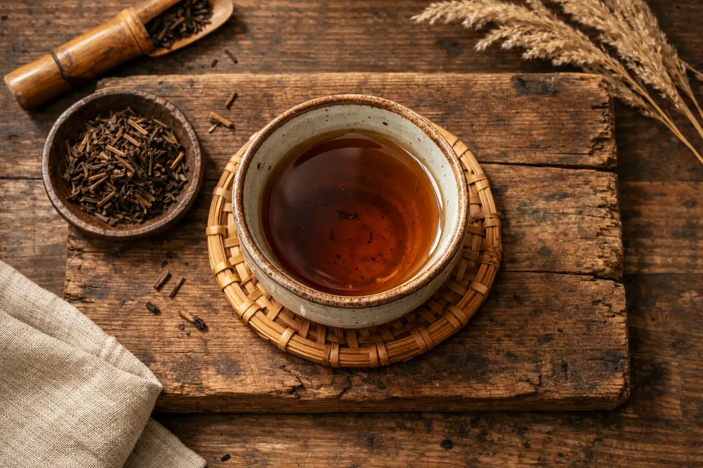
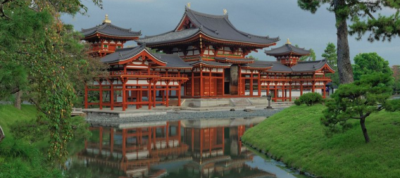
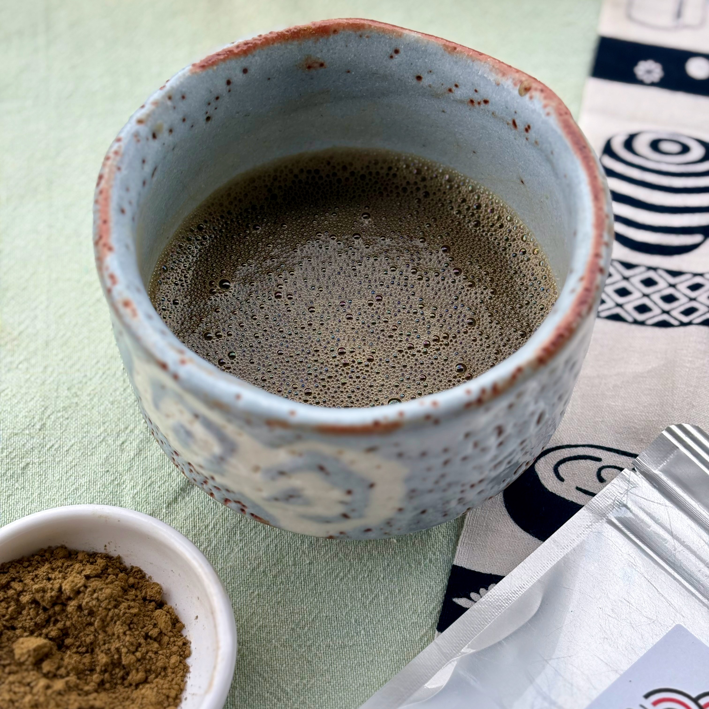
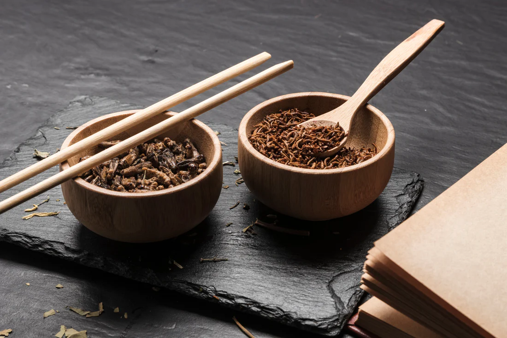
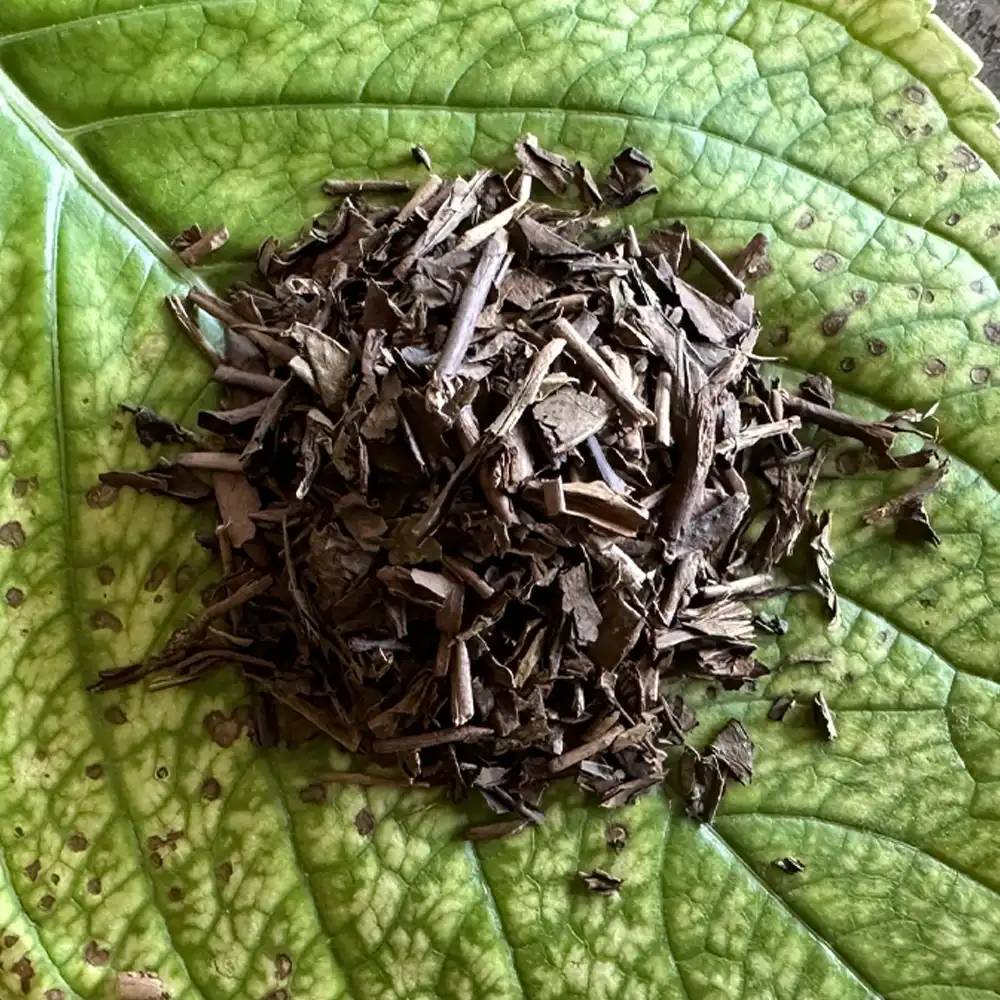
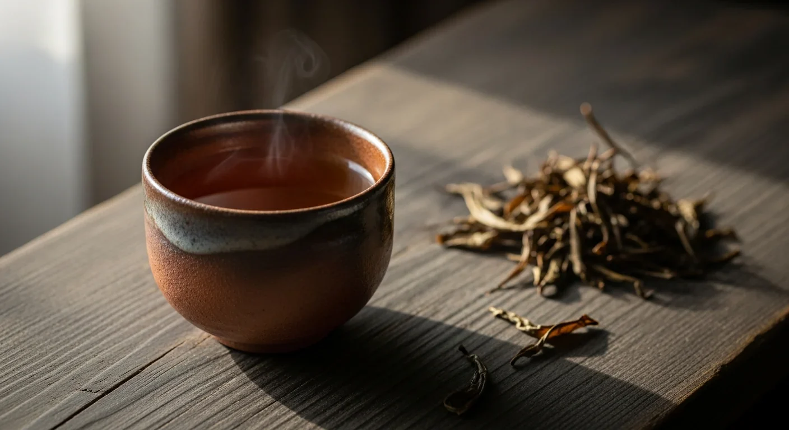

Camelia Sinesis
L’essenza tostata di Kyoto: calore, relax e dolcezza legnosa

L’Hojicha è un tè verde giapponese unico nel suo genere: a differenza dei classici tè verdi che vengono cotti al vapore, l’Hojicha subisce un processo di tostatura ad alte temperature (circa 200°C) su carbone vegetale. Questa lavorazione trasforma il colore delle foglie da verde brillante a un marrone caldo e intenso, modificando radicalmente il profilo aromatico, che perde le note erbacee per acquisire sentori di nocciola, caramello e legno tostato.
Sebbene sia diffuso in tutto il Giappone, l’Hojicha ha radici profonde a Kyoto, nato per massimizzare l'uso di ogni parte della pianta. Viene prodotto principalmente partendo da foglie di Bancha (raccolte tardive) o Kukicha (steli e ramoscelli).

La produzione moderna prevede l’uso di tamburi rotanti che tostano uniformemente la materia prima. Una volta tostato, il tè può essere lasciato in foglie o macinato in una polvere finissima color cacao, ideale per l'uso immediato o in pasticceria.




Sebbene oggi sia un simbolo della cultura giapponese, l'origine del tè in polvere risale alla Cina della dinastia Tang (VII-X secolo). Fu però nel XII secolo che il monaco buddista Eisai portò i semi e il metodo di preparazione in Giappone, intuendo le proprietà benefiche per la meditazione. Con il tempo, il Matcha è diventato il cuore pulsante della Cerimonia del Tè (Chado), un rituale spirituale basato sui principi di armonia, rispetto, purezza e tranquillità.
L'Hojicha è particolarmente apprezzato per la sua delicatezza sull'organismo: